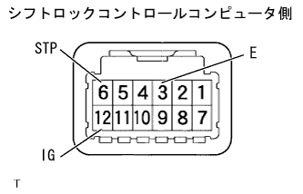
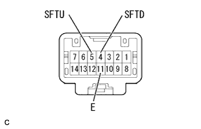
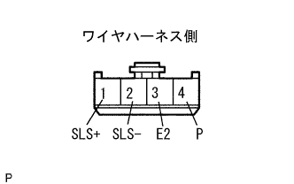

Shift Lock Control Unit Assembly Inspection |
| 1. Shift Lock Control Unit Assembly Inspection |
Shift Lock Control Computer Inspection
 |
Using SST (Toyota electrical tester), measure the resistance or voltage between each terminal.
| Tester Connection | Condition | Standard |
|---|---|---|
| 12(IG) - 3(E) | IG ON | 11 to14V |
| 12(IG) - 3(E) | IG OFF | 0V |
| 6(STP) - 3(E) | Brake pedal depressed (switch ON) | 11 to 14V |
| 6(STP) - 3(E) | Brake pedal released (switch OFF) | 0V |
| Tester Connection | Condition | Standard |
|---|---|---|
| 3 (E) - Body ground | Always | Below 1 Ω |
Transmission Control Switch Inspection
Disconnect the transmission control switch connector.
 |
Using SST (Toyota electrical tester), measure the resistance between the terminals.
| Tester Connection | Condition | Standard |
| 5(SFTU) - 11(E) | Sequential gate shifted to "+" | Below 1 Ω |
| 5(SFTU) - 11(E) 4(SFTD) - 11(E) | Sequential gate in neutral position (M position) | 10 kΩ or higher |
| 4(SFTD) - 11(E) | Sequential gate shifted to "-" | Below 1 Ω |
Shift Lock Solenoid Inspection
Disconnect the shift lock solenoid connector.
 |
Using SST (Toyota electrical tester), measure the resistance between the terminals.
| Tester Connection | Condition | Standard |
|---|---|---|
| 4(P) - 3(E2) | Shift position in P | 10 kΩ or higher |
| 4(P) - 3(E2) | Shift position in any position other than P | Below 1 Ω |
Using SST (Toyota electrical tester), measure the resistance between the terminals.
| Tester Connection | Condition | Standard |
|---|---|---|
| 1(SLS+) - 2(SLS-) | Always | 112 Ω |